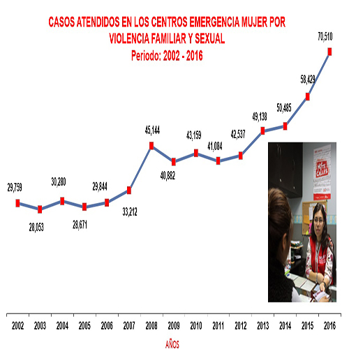

La violencia familiar es uno de los principales problemas sociales y culturales a nivel global, atentando contra la dignidad del ser humano y sus derechos fundamentales como a la vida y la salud; perjudica el desempeño sicosocial de los miembros de la familia en todos los ámbitos de su vida, dentro y fuera del hogar, dificulta el aprendizaje y la socialización, afectando la calidad de vida de las personas, especialmente de los más vulnerables: mujeres, niños, niñas y adolescentes (NNA), poniendo en riesgo la salud física, mental y espiritual de las personas. Las mismos padres son creadores del futuro de sus hijos, no mas maltrato en nuestro pais es el momento de Luchar contra este problema que diariamente termina de acabar con nuestra sociedad. "La sociedad no quiere ver mas maltrato en hogares ni mucho menos muertes en estos mismos, es momento del cambio".
